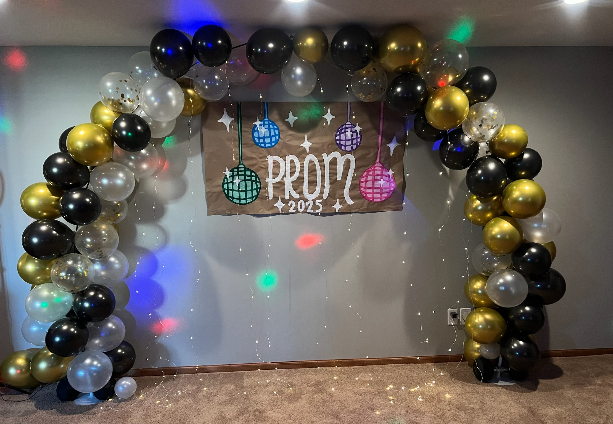
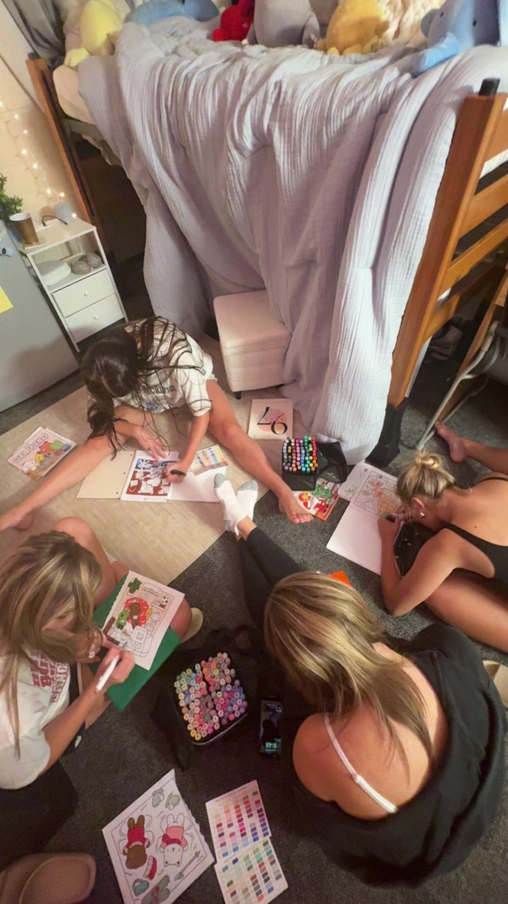

My Passions & Interests
Dance


I started dancing when I was 3 years old, and it quickly became a central part of my life. My parents enrolled me in a local dance studio, and I fell in love with the art form immediately. Over the years, I've trained in various styles including ballet, jazz, hip-hop, tap, kick, pom and contemporary. Dance has been more than just a hobby for me - it's a way to express myself creatively and connect with others who share my passion.
What I love most about dance is the combination of physical expression and storytelling. Each movement tells a story, and I've learned to communicate emotions and ideas through my body better than I ever could with words. I've developed discipline, coordination, and resilience through years of practice. I've also had the opportunity to compete in local competitions and school shows in high school, and now the UDA Nationals stage this year in college. These surreal experiences have built my confidence and stage presence.
Dance has shaped who I am today by teaching me to be more expressive, confident, and resilient. It has influenced my career goals by showing me the value of creativity and teamwork in performance settings. In the future, I hope to still have dance in some aspect of my life whether its coaching or choreographing routines, but I really want to continue sharing the joy and discipline that dance has brought to my life to others.
Crafts


I have always loved to make various arts and crafts since I was little. I started with simple projects like friendship bracelets and paper crafts, but over time I've expanded into more complex projects like sewing, painting, and DIY home decor. I find the process of creating something to be incredibly rewarding and therapeutic. It's a great way to unwind and express my creativity outside of academics.
My favorite craft project to make would have to be my posters for events such as birthdays, parties, and school dances. My accomplishment I have in this is that I have actually had people reach out for me to make them signs for them which I could eventually turn into a side job. I have also made various different home decor items such as wall art. I love being able to customize my living space with things I've made myself, and it gives me a sense of pride to see my creations on display.
This hobby definitely complements my Marketing and Graphic Designmajor, as both involve creativity and visual communication. I hope to continue developing my crafting skills and potentially use them in a professional context, such as creating marketing materials or event decor for a company. Crafting has taught me patience, attention to detail, and the joy of bringing ideas to life - all qualities that I believe will serve me well in my future career.